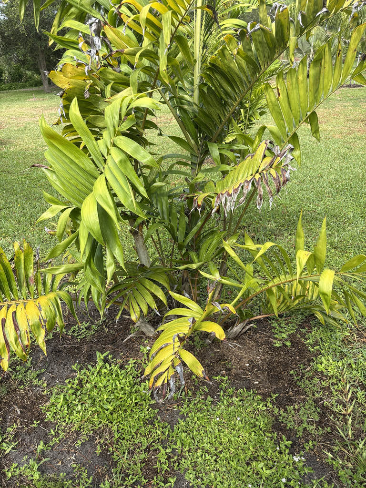

- The leaves are unusually broad for this group of palms. Their leaflets spread at different angles along the central stem, giving each frond a full, three-dimensional look rather than a flat one.
- This palm is native only to the Comoros, a small group of volcanic islands in the western Indian Ocean. It grows in mountain rain forest on Grande Comore and Moheli, where its forest habitat is under pressure.
- This palm is currently listed as Vulnerable, but the assessment is flagged as needing an update, and forest loss continues to put pressure on native palms across the islands. What the current rating reflects may not tell the whole story.
- The palm usually grows as a clump, with several slender trunks rising from the same base. The pale rings on the green stems can make a mature clump look surprisingly like a stand of bamboo.
- The smooth collar just below the leaves can show white, green, and reddish-brown tones, especially around the leaf bases. It is one of the easiest details to notice once you know where to look.
Dypsis lanceolata is native only to the Comoros, a group of volcanic islands in the western Indian Ocean between Madagascar and the coast of East Africa. It is recorded from Grande Comore and Moheli, where it grows in humid forest at middle elevations between roughly 500 and 1,000 meters.
The species is currently listed as Vulnerable on the IUCN Red List, but that assessment dates to 1998 and is flagged as needing an update. Forest clearing is putting pressure on native palms throughout the islands, and the actual situation may be more serious than the existing rating indicates.
It has made its way into specialist palm collections and tropical horticulture because of its compact size, attractive foliage, and unusual clumping habit.
- The Comoros have their own small group of native palms, and several are now seriously threatened. This palm's IUCN assessment is dated and flagged for review, and forest loss continues to put pressure on the islands' native flora.
- This is a genuinely uncommon palm in cultivation. It is rarely encountered in ordinary nursery trade and is more often seen in specialist palm collections and botanical gardens.
- Like all Dypsis palms, this species is monoecious: each plant carries both male and female flowers on the same branched flower stems, so a single specimen can potentially set fruit without a second plant nearby. The flowers emerge from between the leaf stalks, and the fruits ripen red.
- Healthy cultivated plants can provide an important backup for rare species like this one. Botanical gardens and other collections help keep threatened plants growing outside their shrinking natural habitats.
The flowers can attract generalist insects when the palm is blooming, and the fleshy red fruits may be taken by fruit-eating birds. Those relationships are not well documented in Florida, however.
Because this is a palm from the Comoros rather than Florida, it is not known to be a larval food plant for Florida butterflies or moths. Its greatest value at the park is botanical rather than ecological: it gives visitors a chance to see a rare palm from an island ecosystem where native palms are increasingly under pressure.
Propagation is primarily by seed. The palm also produces additional stems from the base as it matures, forming a clump. Established clumps can sometimes be separated, but seed is the usual way to propagate and distribute the species.
Flower stems emerge from between the leaf stalks and branch several times. The small flowers include both male and female flowers on the same plant. Flowering details in Florida cultivation are not well documented.
The fruits are slender and oval, about half to two-thirds of an inch long, and ripen to red. Each contains a seed that can be used to grow a new palm.
Pinnate (feather-type), gracefully arching, and unusually full. The leaflets are broader than those of many slender palms and spread in different directions along the central stem, giving the fronds a soft, three-dimensional appearance. The leaves are dark, glossy green.
Several slender stems rise from the same base, usually about 3 to 4 inches thick and 16 to 20 feet tall. The stems are green and marked with clean, pale rings left by old leaf bases, giving the clump a bamboo-like appearance. The short collar just below the leaves can show white and reddish-brown tones.
Start at the base: look for several slender stems growing together rather than a single trunk. The pale rings on the green stems give the clump a bamboo-like appearance. Move upward to the short, colorful collar just below the leaves, then look at the fronds themselves. Their broad leaflets spread in different directions, giving the crown a full, three-dimensional appearance.
If the palm is fruiting, look between the leaf stalks for hanging clusters of small red fruits.
No specific toxicity has been documented for this species in the sources reviewed. It is not known as a poisonous landscape plant and has no obvious physical hazards such as spines or irritating sap.
The palm has been known in horticulture under the name Dypsis lanceolata for many years, so that name remains common in nursery catalogs, palm collections, and older references. The synonym Chrysalidocarpus lanceolatus still appears in older literature.
The species was described in the early 20th century and later became popular with specialist palm collectors because of its unusual foliage and clumping habit.
The Comoros are home to several palm species found nowhere else, and ongoing forest loss has raised concerns about the conservation status of several of them. This makes cultivated specimens of these palms increasingly valuable as living representatives of the islands' unique flora.


- © Randall Carter (CC-BY-NC), via iNaturalist